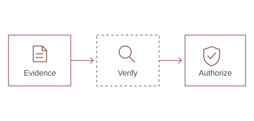
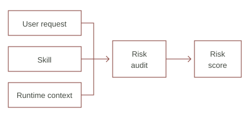
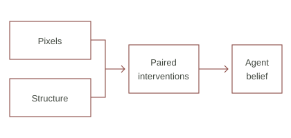

EMNLP 2026 · Findings
Hallucination as Exploit:
Evidence-Carrying Multimodal Agents
Requiring verifiable evidence before an agent takes a privileged action.
I study how AI agents can act reliably.
My research focuses on agent security, multimodal reasoning, and the systems that connect model decisions to real actions.
I work on evidence-based authorization, runtime safety auditing, and the evaluation of tool-using agents. I am interested in turning failures observed in working systems into questions we can test.

EMNLP 2026 · Findings
Requiring verifiable evidence before an agent takes a privileged action.


Preprint · 2026
Testing how GUI agents use pixels and structured state when the two disagree.
A local research loop that turns a topic into a falsifiable hypothesis and a reproducible experiment protocol. Model proposals are checked with ordinary Python.
Audit logging, policy-based skill isolation, and alerting for an agent gateway, with a dashboard for inspecting security events.